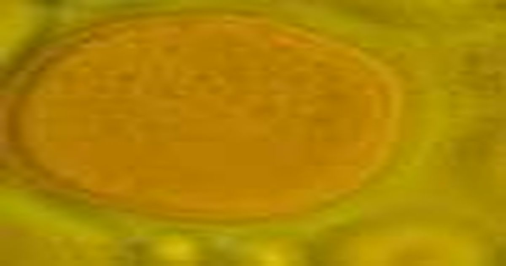

Липиды-изгои: как обычный клеточный стресс может подпитывать хроническое воспаление
Окисленные липиды - жиры, структурно измененные ферментами, кислородом или свободными радикалами - являются обоюдоострыми мечами, которые могут как подавлять, так и воспламенять системное воспаление, согласно новому комплексному обзору, направленному на углубление общего понимания сложного класса высокореактивных молекул.